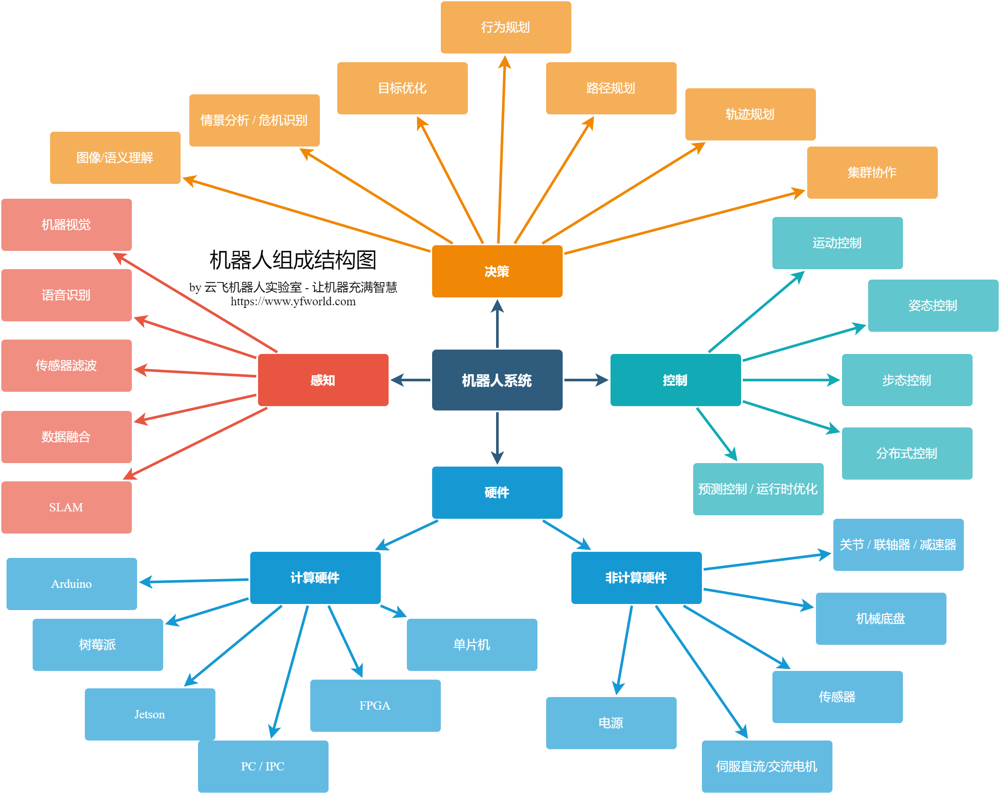

什么是机器人？
引言
机器人涉及的知识甚广，包括自动控制、人工智能、运筹、调度、人机交互、通信、操作系统、电力电子、数字电路、模拟电路等多个领域。
机器人的定义
根据国际标准化组织 ISO 8373 的定义，机器人（Robot）是一种可编程的、具备两个或更多轴的驱动机构，具有一定程度的自主能力，能够在其所处环境中运动，并执行预期任务的机器。
"机器人"一词最早源自捷克作家卡雷尔·恰佩克（Karel Capek）于 1920 年创作的剧本《罗素姆的万能机器人》（R.U.R.），其中的捷克语"robota"意为"强制劳动"。此后，美国科幻作家艾萨克·阿西莫夫（Isaac Asimov）在其小说中提出了著名的"机器人三定律"（Three Laws of Robotics），对机器人的概念和伦理产生了深远影响。
机器人发展简史
机器人技术的发展经历了几个重要阶段：
- 1950 年代：George Devol 发明了第一台可编程机械臂 Unimate，被视为工业机器人的起点
- 1960 年代：Unimate 在通用汽车工厂投入使用，标志着机器人在工业领域的首次商业应用。斯坦福研究所开发了移动机器人 Shakey，首次将感知、推理和行动结合在一起
- 1970-80 年代：工业机器人在汽车制造业得到大规模应用，SCARA 和六轴机械臂成为主流形态。日本在这一时期迅速崛起，成为工业机器人大国
- 1990 年代：Honda 推出 P2/P3 人形机器人，Sony 推出 AIBO 机器狗，移动机器人和仿人机器人研究进入新阶段
- 2000 年代：DARPA 挑战赛推动了自动驾驶技术，iRobot Roomba 开启了家用服务机器人市场，ROS 的诞生为机器人软件开发提供了统一框架
- 2010 年代至今：深度学习技术的突破为机器人感知和决策带来质的提升，协作机器人（Cobot）在工业中普及，人形机器人和通用机器人成为新的发展热点
机器人的分类
机器人可以从多个维度进行分类：
按应用领域分类：
- 工业机器人（Industrial Robots）：用于焊接、装配、搬运、喷涂等制造任务
- 服务机器人（Service Robots）：面向家庭、医疗、教育、餐饮等非工业场景
- 特种机器人（Special Robots）：用于军事、深海、太空、救灾等极端环境
按运动形态分类：
- 固定基座机械臂（Manipulators）：安装在固定位置的多关节机械臂
- 移动机器人（Mobile Robots）：具备自主移动能力的机器人，包括轮式、履带式和腿式
- 人形机器人（Humanoid Robots）：模仿人类外形和运动方式的机器人
- 空中机器人（Aerial Robots / UAV）：无人机和飞行机器人
- 水下机器人（Underwater Robots / AUV）：水下自主或遥控潜航器
机器人系统的组成
下图绘制了机器人中的一些基本概念：

如图中所示，构成一个完整的机器人系统的组成部分有：
- 机械平台
- 硬件（包括电池、传感器）
- 操作系统（包括RTOS/Linux及中间件）
- 软件（包括感知、决策、规划等）
除此之外，还有机器人之外的支持系统，如中央云服务器等。
具体而言，一个典型的机器人系统包含以下关键组件：
机械结构（Mechanical Structure）
机械结构是机器人的物理本体，包括连杆（Links）、关节（Joints）、底盘（Chassis）和末端执行器（End Effector）等。机械结构的设计决定了机器人的运动能力、负载能力和工作空间。
驱动与执行器（Actuators）
执行器将能量转换为机械运动，常见类型包括电机（Electric Motor）、液压缸（Hydraulic Cylinder）和气动执行器（Pneumatic Actuator）。电机是最常用的驱动方式，包括直流电机、步进电机和无刷电机等。
传感器（Sensors）
传感器使机器人能够感知自身状态和外部环境。常见传感器包括：编码器（Encoder）用于测量关节角度、IMU（惯性测量单元）用于测量姿态、激光雷达（LiDAR）和相机（Camera）用于环境感知、力/力矩传感器用于接触力测量。
控制系统（Control System）
控制系统是机器人的大脑，负责根据传感器信息计算控制指令并驱动执行器。控制系统通常分为底层伺服控制（低延迟的关节级控制）和高层决策规划（任务级的感知、规划和决策）。
软件与算法（Software & Algorithms）
机器人软件涵盖操作系统（如 ROS）、感知算法（如 SLAM、目标检测）、规划算法（如路径规划、运动规划）和决策算法（如行为树、状态机）。近年来，机器学习尤其是强化学习（Reinforcement Learning）在机器人控制和决策中的应用日益广泛。
行业现状与未来趋势
当前，机器人产业正处于快速变革期。工业机器人已经高度成熟，全球年安装量持续增长。服务机器人领域则处于爆发前期，随着人口老龄化和劳动力成本上升，医疗机器人、物流机器人和家庭服务机器人的需求不断增加。
未来机器人技术的发展趋势包括：
- 通用人形机器人：多家科技公司和初创企业正在研发能够执行多种任务的通用人形机器人，目标是像人一样在非结构化环境中工作
- AI 与机器人的深度融合：大语言模型（LLM）和视觉-语言模型（VLM）正在赋予机器人更强的理解和推理能力
- 人机协作：协作机器人的普及使人与机器人能够在同一工作空间中安全协作
- 集群与多机器人系统：多个机器人协同工作以完成单个机器人难以胜任的复杂任务
- 软体与仿生机器人：受生物启发的柔性机器人在医疗和特殊环境作业中展现出独特优势